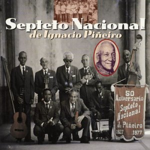

Cantos Populares en Highlife, Hiplife y Son
Elementos Básicos

Son Cubano

Suavecito
Esta canción fue grabada originalmente en 1926 por el Septeto Nacional de Ignacio Piñeiro. Escucha la clave 3-2 en esta canción.
Esta canción fue grabada originalmente en 1926 por el Septeto Nacional de Ignacio Piñeiro. Escucha la clave 3-2 en esta canción.
Poetas del Son
Ignacio Piñeiro era llamado "El Poeta del Son". Este también es el nombre de una de las canciones de Septeto Nacional y su álbum del 75 aniversario. Escucha el 2-3 clave de esta canción.
Ignacio Piñeiro era llamado "El Poeta del Son". Este también es el nombre de una de las canciones de Septeto Nacional y su álbum del 75 aniversario. Escucha el 2-3 clave de esta canción.
Candela Es Mi Sucu Sucu
La Tumbita Criolla de Mongo Rives es una banda que tocaba el estilo de son "sucu-sucu". Escucha el guajeo en esta canción.
La Tumbita Criolla de Mongo Rives es una banda que tocaba el estilo de son "sucu-sucu". Escucha el guajeo en esta canción.
Highlife
Mansa
Esta canción Highlife contemporánea de Bisa Kdei fue grabada en 2015 y usa el ritmo de clave 3-2.
Esta canción Highlife contemporánea de Bisa Kdei fue grabada en 2015 y usa el ritmo de clave 3-2.
Daavi Loloto
E.T Mensah se llamaba "El Rey de Highlife" y fue el lider de Los Tempos (1947-66). En esta canción la banda toca el guajeo con bajo y cuernos.
E.T Mensah se llamaba "El Rey de Highlife" y fue el lider de Los Tempos (1947-66). En esta canción la banda toca el guajeo con bajo y cuernos.